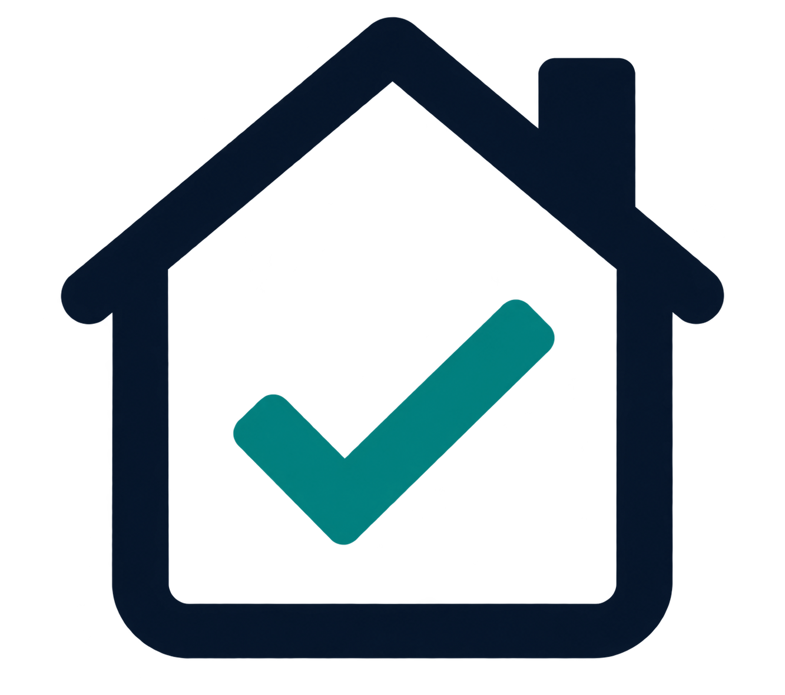

Familias censadas
—
Hogares únicos registrados

Cargando…
Censo de popularidad casa por casa
Sistema de uso interno · Acceso restringido
Centro de resultados
Tamahú, Alta Verapaz
Preparando resultados…
Explorar resultados
Toca cualquier barra de las gráficas para filtrar. Tócala otra vez para quitar el filtro.
Familias censadas
—
Hogares únicos registrados
Votantes registrados
—
Comunidades representadas
—
comunidades
Preferencia principal
—
Panorama político
Comparación ordenada de mayor a menor.
Detalle territorial
Familias y votantes por partido o sin preferencia en una sola vista.
Desliza horizontalmente para ver todas las preferencias. Usa “Ver detalle” para filtrar el dashboard por una comunidad.
Administración
Busca una familia y elimina el registro completo cuando sea necesario.
| Comunidad | Familia | Captura | Votantes | Preferencias | Registro | Acción |
|---|
“Eliminar” anula la familia completa y deja de mostrarla en resultados y exportaciones.
Concentración territorial
Las 10 con más votantes